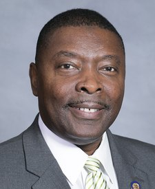

← Every state
North Carolina
The average Liberty Score of the delegation is 80 out of 100, a B-. 15 of its seats in Congress are decided on November 3, 2026.
Who should North Carolina send to Congress, and who should it send home?Say what you think. Other readers can answer you.DiscussOn the ballot November 3
1 Senate seat and 14 House seats in North Carolina. Tap a race to see the candidates side by side.
- SenateLeans DOpen seat
 Roy CooperD · no votes in Congress since 2021. Graded on words and actionsD
Roy CooperD · no votes in Congress since 2021. Graded on words and actionsD Michael WhatleyR · no votes in Congress since 2021. Graded on words and actionsBand 2 more on the ballot
Michael WhatleyR · no votes in Congress since 2021. Graded on words and actionsBand 2 more on the ballot - 1st District
 Don DavisD · holds the seatC-Laurie BuckhoutR · no votes in Congress, and not researched yet–and 1 more on the ballot
Don DavisD · holds the seatC-Laurie BuckhoutR · no votes in Congress, and not researched yet–and 1 more on the ballot - 2nd District
 Deborah RossD · holds the seatFEugene DouglassR · no votes in Congress, and not researched yet–and 1 more on the ballot
Deborah RossD · holds the seatFEugene DouglassR · no votes in Congress, and not researched yet–and 1 more on the ballot - 3rd District
 Greg MurphyR · holds the seatA
Greg MurphyR · holds the seatA
Raymond Smith Jr.D · no votes in Congress, and not researched yet–and 1 more on the ballot - 4th District
 Valerie FousheeD · holds the seatFMax GanorkarR · no votes in Congress, and not researched yet–and 1 more on the ballot
Valerie FousheeD · holds the seatFMax GanorkarR · no votes in Congress, and not researched yet–and 1 more on the ballot - 5th District
 Virginia FoxxR · holds the seatAChuck HubbardD · no votes in Congress, and not researched yet–and 1 more on the ballot
Virginia FoxxR · holds the seatAChuck HubbardD · no votes in Congress, and not researched yet–and 1 more on the ballot - 6th District
 Addison McDowellR · holds the seatA-Cyril JeffersonD · no votes in Congress, and not researched yet–
Addison McDowellR · holds the seatA-Cyril JeffersonD · no votes in Congress, and not researched yet– - 7th District
 David RouzerR · holds the seatAKimberly HardyD · no votes in Congress, and not researched yet–and 1 more on the ballot
David RouzerR · holds the seatAKimberly HardyD · no votes in Congress, and not researched yet–and 1 more on the ballot - 8th DistrictMark HarrisR · holds the seatA-Colby WatsonD · no votes in Congress, and not researched yet–and 1 more on the ballot
- 9th District
 Richard HudsonR · holds the seatARichard OjedaD · no votes in Congress, and not researched yet–
Richard HudsonR · holds the seatARichard OjedaD · no votes in Congress, and not researched yet– - 10th District
 Pat HarriganR · holds the seatA-Ashley BellD · no votes in Congress, and not researched yet–and 1 more on the ballot
Pat HarriganR · holds the seatA-Ashley BellD · no votes in Congress, and not researched yet–and 1 more on the ballot - 11th DistrictOpen seatJamie AgerD · no votes in Congress, and not researched yet–Jennifer BalkcomR · no votes in Congress, and not researched yet–and 1 more on the ballot
- 12th District
 Alma AdamsD · holds the seatFJack CodigaR · no votes in Congress, and not researched yet–
Alma AdamsD · holds the seatFJack CodigaR · no votes in Congress, and not researched yet– - 13th DistrictBrad KnottR · holds the seatA-Paul BarringerD · no votes in Congress, and not researched yet–and 1 more on the ballot
- 14th District
 Tim MooreR · holds the seatB+Lakesha WomackD · no votes in Congress, and not researched yet–
Tim MooreR · holds the seatB+Lakesha WomackD · no votes in Congress, and not researched yet–
Senators today


Representatives today
- Virginia FoxxR · North Carolina · 5th DistrictA
- Richard HudsonR · North Carolina · 9th DistrictA
- David RouzerR · North Carolina · 7th DistrictA
- Gregory F. MurphyR · North Carolina · 3rd DistrictA
 Chuck EdwardsR · North Carolina · 11th DistrictLeaving CongressA
Chuck EdwardsR · North Carolina · 11th DistrictLeaving CongressA- Brad KnottR · North Carolina · 13th DistrictA-
- Mark HarrisR · North Carolina · 8th DistrictA-
- Addison P. McDowellR · North Carolina · 6th DistrictA-
- Pat HarriganR · North Carolina · 10th DistrictA-
- Tim MooreR · North Carolina · 14th DistrictB+
- Donald G. DavisD · North Carolina · 1st DistrictC-
- Deborah K. RossD · North Carolina · 2nd DistrictF
- Alma S. AdamsD · North Carolina · 12th DistrictF
- Valerie P. FousheeD · North Carolina · 4th DistrictF
Who should North Carolina send to Congress, and who should it send home?
Say it where other readers can answer you. Opinions, videos and corrections about North Carolina are all in one place.
← The state
All discussions, from every page →
Discussion
North Carolina
Opinions, videos, corrections and bug reports about North Carolina, all in one place. Readers' words, not ours.
Leave out anything private about anyone. The rules, what your account keeps, and what readers have changed so far
Think a grade is wrong? Argue it with us.
The community meets on a group call every day, with the hosts and the panel. Bring the vote you think we got wrong.